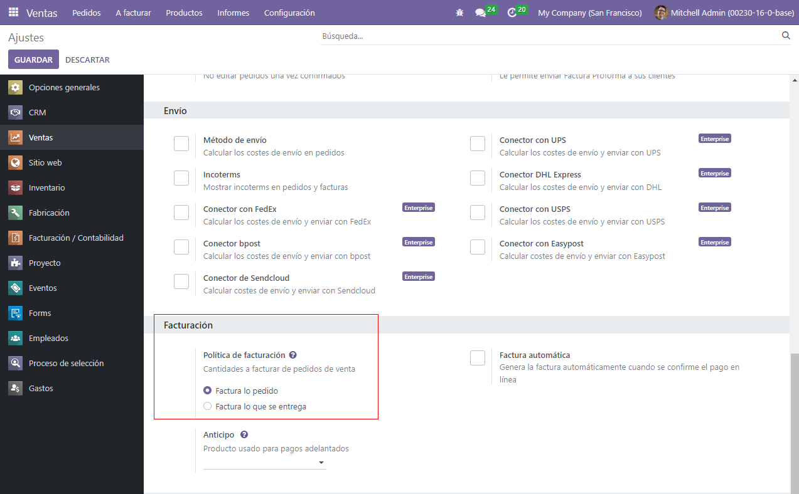
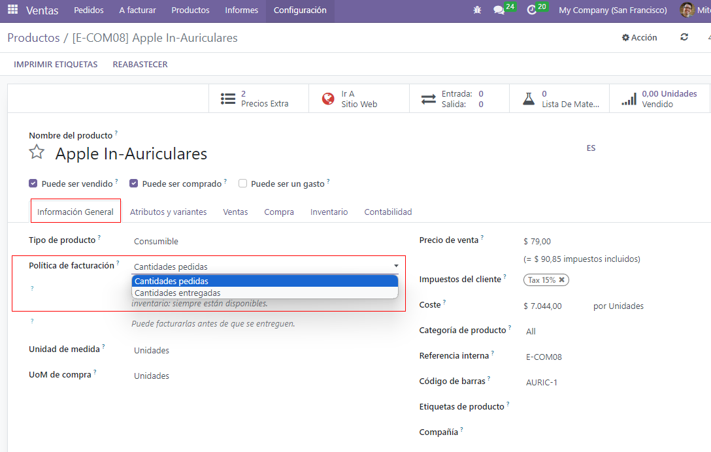
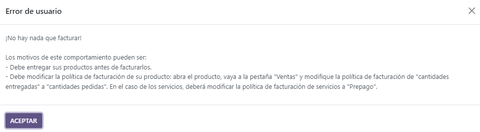
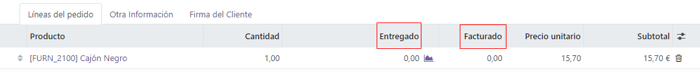

Facturar por cantidades entregadas u ordenadas¶
Diferentes políticas empresariales pueden necesitar distintas opciones para facturar:
La regla Facturar lo ordenado se utiliza de modo predeterminado en la aplicación Ventas de Odoo, lo cual significa que se facturará a los clientes cuando se confirme la orden de venta.
La regla Facturar lo entregado facturará a los clientes cuando se realice la entrega. Por lo general, las empresas que venden materiales, líquidos o alimentos en grandes cantidades utilizan esta regla. En estos casos, la cantidad que se ordenó puede diferir un poco y, por lo tanto, es mejor opción facturar la cantidad que se entregó.
Tener distintas opciones para facturar proporciona más flexibilidad.
Funciones para la política de facturación¶
Para activar las funciones necesarias para la política de facturación, vaya a la aplicación . En la sección Facturación, elija una regla para la política de facturación, puede ser facturar lo ordenado o facturar lo entregado.
Importante
Si elige la regla facturar lo entregado, entonces no será posible activar la función de facturación automática que se encarga de generar facturas de forma automática cuando se confirma un pago en línea.
Política de facturación en un formulario de producto¶
En la página de cualquier producto, desde la aplicación , localice la opción Política de facturación en la pestaña de Información general. Puede seleccionar otra política al hacer clic en el menú desplegable.
Impacto en el flujo de ventas¶
El flujo de ventas básico en la aplicación Ventas inicia con la creación de una cotización que se envía a un cliente. Al confirmarse, se convierte en una orden de venta y esto, a su vez, crea una factura.
De la siguiente forma las reglas impactan a la política de facturación en un flujo de ventas como el anterior:
Facturar lo ordenado: no produce ningún impacto en un flujo de ventas básico y se crea una factura al momento de confirmar una venta.
Facturar lo entregado: produce un impacto menor en un flujo de ventas, ya que debe ingresar la cantidad entregada manualmente a la orden de ventas. También puede instalar la aplicación Inventario y utilizarla para confirmar la cantidad entregada antes de crear una factura con la aplicación Ventas.
Advertencia
Si un usuario intenta crear una factura sin validar la cantidad entregada, aparecerá el siguiente mensaje de error: No hay línea facturable. Si un producto tiene una política de facturación basada en la cantidad recibida, asegúrese de que se haya recibido una cantidad.
Nota
Una vez que una cotización está confirmada y su estado cambia de cotización enviada a orden de ventas podrá ver las cantidades entregadas y facturadas desde la orden de ventas. Esto ocurre en cualquiera de las dos opciones de las reglas para la política de facturación.
Cuando se confirma la cotización, Odoo agrega las cantidades entregadas y facturadas a la factura en automático, incluso al realizar una entrega parcial.
Por último, existen varias opciones distintas para crear una factura, como factura normal, anticipo (porcentaje) o anticipo (importe fijo).
Ver también
Para obtener más información sobre las opciones para anticipos, consulte la siguiente documentación: Anticipos